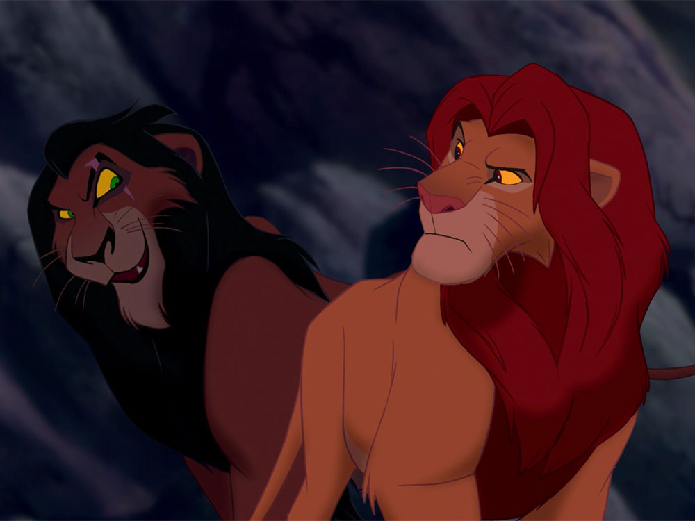
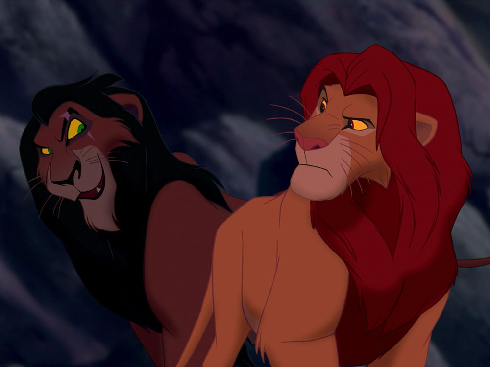

Мультфильмы


Краткое описание:
12-летний Мигель живёт в мексиканской деревушке в семье сапожников и тайно мечтает стать музыкантом. Тайно,
потому что в его семье музыка считается проклятием. Когда-то его прапрадед оставил жену, прапрабабку Мигеля,
ради мечты, которая теперь не даёт спокойно жить и его праправнуку. С тех пор музыкальная тема в семье стала
табу. Мигель обнаруживает, что между ним и его любимым певцом Эрнесто де ла Крусом, ныне покойным,
существует некая связь. Паренёк отправляется к своему кумиру в Страну Мёртвых, где встречает души предков.
Мигель знакомится там с духом-скелетом по имени Гектор, который становится его проводником. Вдвоём они
отправляются на поиски де ла Круса.


Краткое описание:
В некотором царстве, в некотором государстве жила-была царская дочь Василиса. И всем она была хороша –
и красива, и умна, да только замуж выходить не хотела. И решил тогда царь выдать её за первого встречного.
А первым встречным оказывается Иван из соседнего царства… Но, чтобы стать мужем царской дочки, нужно Ивану
пройти сказочное испытание. А приказал ему царь-батюшка пойти Ивану туда «не знаю — куда» и найти «то, не
знаю что». Отправился Иван со своим помощником Серым Волком в Тридевятое царство. А Кот Учёный рассказал
ему, что есть один колодец из которого доносятся загадочные звуки, и дал с собой в дорогу волшебное зеркало…
 


Краткое описание:
У величественного Короля-Льва Муфасы рождается наследник по имени Симба. Уже в детстве любознательный
малыш становится жертвой интриг своего завистливого дяди Шрама, мечтающего о власти.
Симба познаёт горе утраты, предательство и изгнание, но в конце концов обретает верных друзей и находит
любимую. Закалённый испытаниями, он в нелёгкой борьбе отвоёвывает своё законное место в «Круге жизни»,
осознав, что значит быть настоящим Королём.